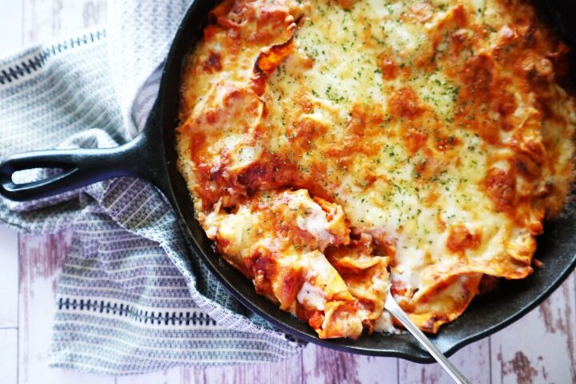

Easy Cheesy Skillet Lasagna

Description
Skillet Lasagna is loaded with flavor and so much cheese, you will be making it again and again. Try this easy one pan meal for dinner tonight!
This one pan lasagna recipe goes from prep to plate in just 30 minutes! Now you can enjoy all those classic Italian flavors without spending hours in the kitchen.
Ingrdients
- 2 tablespoons extra virgin olive oil
- 1 pound 93% lean ground beef
- 3 cloves garlic, minced or pressed
- 2 teaspoons kosher salt
- 1 teaspoon fresh ground black pepper
- 1/2 teaspoon red pepper flakes
- 2 teaspoons dried oregano
- 2 teaspoons dried basil
- 1 teaspoon dried rosemary
- 16 ounce box Campanelle pasta
- 2 (14.5-ounce) cans diced tomatoes, no salt
- 3 cups water
- 4 ounces shredded fresh Parmesan cheese
- 8 ounces fresh mozzarella cheese, sliced into 5 pieces
- 4 ounces whole ricotta cheese
- 1/4 cup fresh basil, chopped
Steps
- In a large oven safe skillet over medium-high heat, warm oil. Add beef, garlic, salt, pepper, oregano, basil, and rosemary. Stir to combine. Allow meat to brown, stirring occasionally. About 7 minutes.
- Preheat oven to broil.
- Add pasta, tomatoes and water to skillet. Stir until well combined and pasta is submerged. Cover and cook until pasta is al dente, stirring occasionally. About 7-8 minutes.
- Remove from heat and stir in Parmesan cheese. Place a mozzarella slice in the center of the skillet and the 4 remaining evenly around the skillet. Dollop the ricotta in the spaces between the mozzarella. Place skillet in oven until mozzarella cheese is golden brown and bubbly. About 3-5 minutes. CAUTION SKILLET IS HOT!!! Use a pot holder to remove from oven. Sprinkle with fresh basil and serve.